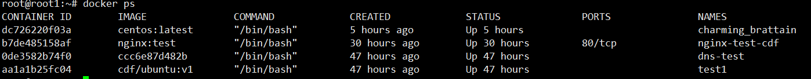

ps
列出容器
语法
docker ps [选项]
选项
- -a
显示所有的容器，包括未运行的。 - -f
根据条件过滤显示的内容。 - --format
指定返回值的模板文件。 - -l
显示最近创建的容器。 - -n
列出最近创建的n个容器。 - --no-trunc
不截断输出。 - -q
静默模式，只显示容器编号。 - -s
显示总的文件大小。
使用示例
$ docker ps
显示类似如下图

字段说明
| 字段 | 说明 |
|---|---|
| CONTAINER ID | 容器 ID |
| IMAGE | 使用的镜像 |
| COMMAND | 启动容器时运行的命令 |
| CREATED | 容器的创建时间 |
| STATUS | 容器状态 |
| PORTS | 容器的端口信息和使用的连接类型（tcp\udp） |
| NAMES | 自动分配的容器名称 |
状态有七种
(上图为什么显示的不是状态我还不太清楚)
- created（已创建）
- restarting（重启中）
- running（运行中）
- removing（迁移中）
- paused（暂停）
- exited（停止）
- dead（死亡）
inspect
获取容器/镜像的元数据。
语法
docker inspect [选项] NAME|ID [NAME|ID...]
选项
- -f
指定返回值的模板文件。 - -s
显示总的文件大小。 - --type
为指定类型返回JSON。
使用示例
获取正在运行的容器 mymysql 的IP
$ docker inspect --format='{{range .NetworkSettings.Networks}}{{.IPAddress}}{{end}}' mymysql
top
查看容器中运行的进程信息，支持 ps 命令参数。
语法
docker top [选项] CONTAINER [ps 选项]
使用示例
查看所有运行容器的进程信息
$ for i in `docker ps |grep Up|awk '{print $1}'`;do echo \ &&docker top $i; done
attach
连接到正在运行中的容器。
说明
要attach上去的容器必须正在运行，可以同时连接上同一个container来共享屏幕（与screen命令的attach类似）。
如果container当前在运行bash，CTRL-C自然是当前行的输入，没有退出；
如果container当前正在前台运行进程，如输出nginx的access.log日志，CTRL-C不仅会导致退出容器，而且还stop了。
这不是我们想要的，detach的意思按理应该是脱离容器终端，但容器依然运行。
好在attach是可以带上--sig-proxy=false来确保CTRL-D或CTRL-C不会关闭容器。
语法
docker attach [选项] CONTAINER
使用示例
容器mynginx将访问日志指到标准输出，连接到容器查看访问信息。
$ docker attach --sig-proxy=false mynginx
events
从服务器获取实时事件
语法
docker events [选项]
选项
- -f
根据条件过滤事件； - --since 从指定的时间戳后显示所有事件;
- --until 流水时间显示到指定的时间为止；
使用示例
显示docker 镜像为mysql:5.6 2016年7月1日后的相关事件。
$ docker events -f "image"="mysql:5.6" --since="1467302400"
logs
获取容器的日志
语法
docker logs [选项] CONTAINER
选项
- -f
跟踪日志输出 - --since
显示某个开始时间的所有日志 - -t
显示时间戳 - --tail
仅列出最新N条容器日志
使用示例
查看容器 mynginx 从2020年7月1日后的最新10条日志。
$ docker logs --since="2020-07-01" --tail=10 mynginx
wait
阻塞运行直到容器停止，然后打印出它的退出代码。
语法
docker wait [选项] 容器 [容器...]
使用示例
$ docker wait CONTAINER_ID
export
将文件系统作为一个tar归档文件导出到STDOUT。
语法
docker export [选项] 容器
选项
- -o
将输入内容写到文件。
使用示例
将id为 a404c6c174a2 的容器按日期保存为tar文件。
$ docker export -o mysql-`date +%Y%m%d`.tar a404c6c174a2
port
列出指定的容器的端口映射，或者查找将PRIVATE_PORT NAT到面向公众的端口。
语法
docker port [选项] 容器 [PRIVATE_PORT[/PROTO]]
使用示例
查看 mymysql 容器的端口映射情况
$ docker port mymysql